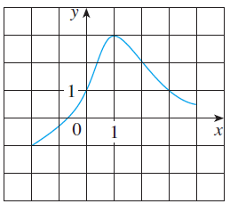

3 The graph of a function is given.

(a) State the value of \(f(1)\).
(b) Estimate the value of \(f(-1)\).
(c) For what values of x is \(f(x) =
1\)?
(d) Estimate the value of x such that \(f(x) =
0\).
(e) State the domain and range of f.
(f) On what interval is f increasing?
Solution:
(a) Looking at the x-axis when \(x =
1\), the value on the y-axis that match that value is \(y = 3\). Therefore, \(f(1) = 3\).
(b) Using the same tactic from part a, the value that matches the value
on the y-axis when \(x = -1\) is
approximately \(y = -0.2\). Therefore,
the estimated value is \(f(-1) =
-0.2\)
(c) Looking at the y-axis now, when \(y =
1\) the values on the x-axis that match that value is \(x = 0\) and \(x =
3\).
(d) Using the same tactic from part b, the value that matches the value
on the x-axis when \(y = 0\) is
approximately \(x = -0.8\).
(e) Since the minimum x value is -2 and maximum is 4, the domain is:
\([-2,4]\). The minimum y value is -1
and maximum is 3. The range, or the image, is: \([-1,3]\).
(f) For the function to be increasing, \(f(x_2) > f(x_1)\) whenever \(x_1 < x_2\) on the interval. Therefore,
f is increasing on the interval \(I:
[-2,1]\)